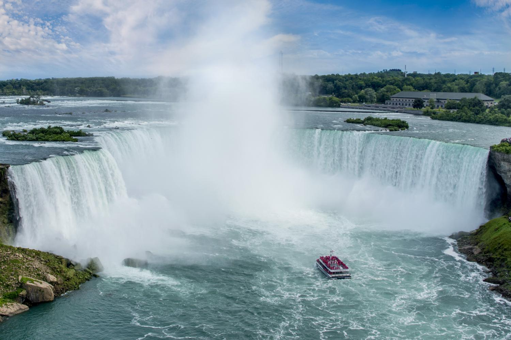

-
The Beach
I can imagine that most people, when thinking of Canada, tend to think of cold weather. You might be genuinely surprised to learn that Canada can get sweltering hot days easily as high as 104F(40C). With that you might be trying to figure out, if your lucky you could go to a nearby beach to cool off. In addition to cooling off, The beach and the mountains can provide beautiful views that you might not find in the USA. When I got to go to the beach, I saw some of the most transparent water I had ever seen. The beach would be a great place to go to after a long trip or on a beautiful warm day.
-
Niagara falls
want to enjoy more of the nature in Canada? oh boy, I have treat for you! The biggest falls in the world exist in Canada. enjoy a nice water fall view? This one will be the biggest waterfall you have ever seen. I would be wary when you viewing that you will likely get wet! so bring a poncho or something similar. if you only ever heard of the Niagara falls maybe interested to learn that Niagara falls is made of three different water falls. the Canadian Horse shoe falls the biggest of the trio, then there is the American and bridal veil falls which is considered a part of the USA. the horse shoe falls drops up to 2 million liters of water per second. an impressive amount of water if I do say myself.
-
Go to the Calgary public Library

want a good library to visit? sure this maybe not exciting as seeing a good beach or some huge falls! do you love architecture? then enjoy the view? want something quit to do then read some of the books! additionally, there are authors that speak sometimes in the auditorium.
small disclaimer many of the places on this list, I have not actually visited.